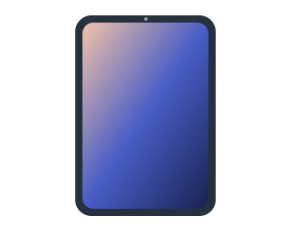

Know your routine.
List the tasks you do most: schoolwork, calls, photos, streaming, or work on the go.
MEET ELITE TECH OUTLET
A business website concept built around everyday gadgets, refurbished devices, and approachable tech support.

WORK. CONNECT. CREATE.OUR DIRECTION
Elite Tech Outlet brings an interest in gadget retail and tech support into one place. This website introduces the concept and helps visitors explore phones, computers, tablets, and accessories.
Choosing a device starts with understanding how you will use it. The goal is to make that conversation easier, whether you need a phone for daily use or a laptop for school and work.
Explore the collection →A SIMPLE WAY TO CHOOSE
List the tasks you do most: schoolwork, calls, photos, streaming, or work on the go.
Consider your budget, screen size, storage, battery life, and device compatibility.
Ask about condition, included accessories, and the seller’s written warranty and return terms.
ABOUT THIS WEBSITE
Created for Tech Foundations CIS (CIDM-6303), this four-page website uses HTML, CSS, and JavaScript, with assistance from an AI coding agent. The catalog and inquiry tool are demonstrations. The site does not process purchases or send messages.
Try the inquiry tool →